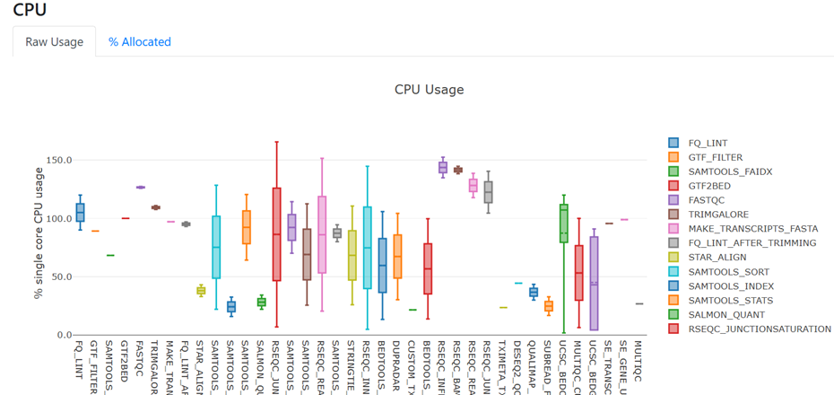
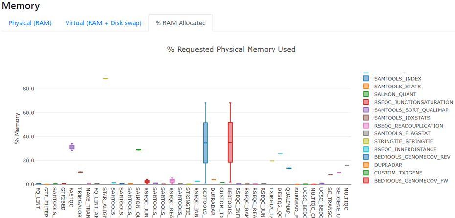
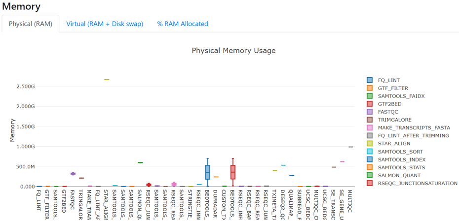

2.2 Custom configuration files for your environment
Objectives
- Learn how to check the default configurations that are applied to nf-core workflows
- Understand how to over-ride default configurations with custom configuration files
- Write a custom configuration file for your local environment and apply this as a
-profileto your run - Observe the hierarchy of custom configurations in action
2.2.1 Separation of parameters and configurations
In Lesson 2.1, we explored how to customise a run with nf-core pipeline parameters on the command line, within a parameters file, or using a run script. In this lesson we will expand upon the Nextflow configuration settings introduced in Lesson 1.3.
Pipeline parameters control what is run, where configurations control how it is run. Customising configurations can be an essential part of getting the workflow to run on your compute system, whether that be your local computer, a remote server or VM, cloud, or High Performance Computer (HPC).
Portability and reproducibilty
Nextflow's portability is achieved by separating workflow implementation (input data, custom parameters, etc.) from the configuration settings (tool access, compute resources, etc.) required to execute it. This portability facilitates reproducibility: by applying the same parameters as a colleague, and adjusting configurations to suit your platform, you can achieve the same results on any machine with no requirement to edit the pipeline source code.
2.2.2 Default nf-core configuration
Recall from Lesson 1.3.1 that when a pipeline script is launched, Nextflow looks for configuration files in multiple locations.
In order of priority, lowest to highest, these are:
1. $NXF_HOME/config (defaults to $HOME/.nextflow/config)
2. nextflow.config in the pipeline directory (eg ~/session2/rnaseq/)
3. nextflow.config in the launch directory (eg ~/session2/)
4. Config files specified with -c <config-files>
At level 2 of the above priority list is the file <pipeline>/nextflow.config. This file also applies <pipeline>/conf/base.config to the workflow execution with the following statement:
Together, these two configuration files define the default execution settings and parameters of an nf-core pipeline.
Let's take a look at these two configuration files for the nf-core/rnaseq pipeline to gain an understanding of how defaults are applied.
2.2.2.1 conf/base.config
Exercise 2.2.2.1  1 min
1 min
Use the code command to open rnaseq/conf/base.config in the VS Code editor, then scroll through the file.
What does this config file do?
Solution
- It sets the default compute resources for all processes in the nf-core pipeline
- It uses descriptive process labels to set compute resources
- The config is generic/pipeline agnostic: it does not name any particular pipeline or process, and assumes we are running locally with all required tools available
How can we over-ride these default compute resources with our custom resources?
Solution
We can over-ride these default compute resources using a custom configuration file.
2.2.2.2 nextflow.config
Exercise 2.2.2.2 2 mins
Use the code command to open rnaseq/nextflow.config in the VS Code editor, then scroll through the file.
What does this config do?
Solution
- The
nextflow.configfile is pipeline-specific, and sets the defaults for the pipeline parameters - It defines profiles to change the default software access from $PATH to the specified access method, eg singularity
- It has a number of
includeConfigstatements to bring in other configurations required for this pipeline
How can we over-ride these default pipeline parameters with our custom parameters?
Solution
We can over-ride the default pipeline parameters on the command line (--<param> <arg>) or within a parameters file
2.2.2.3 Discovering default process settings
Understanding how to discover default process settings from within the default configuration files of an nf-core pipeline can be very useful when it comes to customising a run for your data and computing platform, for example when trying to identify or modify the CPU and memory requirements for a process.
Exercise 2.2.2.3 3 mins
What are the default settings for CPU and memory for the STAR_ALIGN module?
Hint 1: Process labels
To uncover the default compute resources for the STAR_ALIGN process, we need to find out what process label has been assigned to this process.
Process labels are used in conf/base.config to assign default compute resources.
Find the process label within the STAR_ALIGN main.nf file, and check the resources assigned to that label within conf/base.config.
Hint 2: STAR_ALIGN module script
Recall from Lesson 1.1.3 that each process (or 'module') has its own main.nf file which includes the Nextflow code to set up the task as well as the actual command to run the analysis. The STAR_ALIGN process label will be included within this script.
Finding the main.nf script for STAR_ALIGN or any other process can be a little tricky, since nf-core pipelines are a collection of workflows, subworkflows, and modules, that can be local (i.e. used only by) the pipeline, or those that are widely used on other nf-core pipelines.
Applying the knowledge that all nf-core module scripts are named main.nf, we can't search for the file by name, but we can search for the tool name in the module filepath. nf-core filepaths use lower-case, while the process names themselves use capitals, such as STAR_ALIGN.
The bash command below will help you find the STAR_ALIGN main.nf file:
Solution
Step 1: Find the STAR_ALIGN module execution file (main.nf)
Searching for star in the nf-core/rnaseq codebase yields the following output:
./rnaseq/modules/nf-core/sentieon/staralign
./rnaseq/modules/nf-core/star
./rnaseq/subworkflows/local/align_star
In Lesson 1.1.3 we learnt that a subworkflow is a collection of modules.
Looking in the subworkflow script shows that the STAR_ALIGN module is part of this workflow, with module path modules/nf-core/star/align:
//
// Alignment with STAR
//
include { SENTIEON_STARALIGN as SENTIEON_STAR_ALIGN } from '../../../modules/nf-core/sentieon/staralign/main'
include { PARABRICKS_RNAFQ2BAM as PARABRICKS_RNA_FQ2BAM } from '../../../modules/nf-core/parabricks/rnafq2bam/main'
include { STAR_ALIGN } from '../../../modules/nf-core/star/align'
include { STAR_ALIGN as STAR_ALIGN_IGENOMES } from '../../../modules/nf-core/star/align'
include { BAM_SORT_STATS_SAMTOOLS } from '../../nf-core/bam_sort_stats_samtools'
Step 2: Find the process label within the STAR_ALIGN main.nf file:
The process label can then be found in the modules/nf-core/star/align/main.nf file, by viewing the file directly (the label will be near the top):
process STAR_ALIGN {
tag "$meta.id"
label 'process_high'
Or with the grep command:
Step 3: Identify the default resources assigned to that process label
Open conf/base.config and search for the process high resources. This shows that the STAR_ALIGN process will receive 12 CPU and 72 GB memory by default.
2.2.3 When to use a custom config file
In Lesson 1.4.4, we applied custom configurations to the rnaseq pipeline to restrict the maximum amount of CPUs and memory each process can use with the custom config we created. As observed when we attempted to run the pipeline before adding that configuration, this customisation was required in order to run the pipeline in our environment.
Apart from reducing resources to adapt to a low-resource compute environment, there are other circumstances in which our nf-core pipeline run can benefit from custom configurations:
- Increase process resources to take advantage of high CPU or high memory infrastructure
- Increase process resources to adapt to large or complex datasets that require greater compute than defined by the defaults. You will know this is required when your run fails with an out of memory or out of walltime error!
- Adjust resources for bottleneck processes to promote better throughput considering the shape of the compute hardware
- Execute specific modules on specific node types on a cluster, for example trying out the latest GPU queue for a GPU-enabled tool used by the pipeline
- Test out a newer version of a tool used in the pipeline
- Customise outputs beyond what is possible using the nf-core pipeline parameters
The rest of Lesson 2.2 will explore custom resource configuration files. We won't be covering customising runs for HPC in this workshop, but please check out our Nextflow for HPC workshop later if you are interested in this.
2.2.4 Configuration profiles
In Lesson 1.4.4 we started developing a custom config for our workshop Nectar VMs. We applied this config to our run using the Nextflow -c <myconfig> parameter.
Custom configurations can also be included as a profile, just as we did for the MultiQC report configuration in Lesson 1.3.6. Profiles are the way in which nf-core's global community-driven shared institutional configs, introduced in Lesson 1.3.5, can be applied to your pipeline runs on any of the platforms included in the shared config collection.
We recommend you use the NCI Gadi shared config or Pawsey Setonix shared config if you run nf-core pipelines on these national HPCs. If the computer you are running your nf-core pipelines on does not have a shared config, you may need to create a custom config so that the run can complete with the hardware available on your machine.
Using a shared configuration profile
To use a shared configuration file for your run, include the relevant profile name, for example:
If you apply a shared config profile and you do not have a copy of the shared config in <workflow>/conf, the pipeline will fetch it at run time.
If you are running in an environment with no external internet connection, you will need to pre-download the config, as well as singularity images. If this describes your environment, we recommend the following command, to fetch the entire pipeline code, required images, and shared config files:
2.2.4.1 Using a custom configuration profile
To add a custom profile to a run command, the configuration file which the profile is defined in must be applied to the run, either directly with -c <myconfig>, via includeConfig within another applied config, or through the default locations that Nextflow searches for configuration files.
In order of priority, lowest to highest, these are:
1. $NXF_HOME/config (defaults to $HOME/.nextflow/config)
2. nextflow.config in the pipeline directory (eg ~/session2/rnaseq/)
3. nextflow.config in the launch directory (eg ~/session2/)
4. Config files specified with -c <config-files>
We do not recommend implicitly relying on Nextflow's default inclusion of custom configs within a user's home (hierarchy level 1) or nextflow.config within the launch directory (hierarchy level 3). This can create confusion as to where options are being applied. Being explicit with -c makes it obvious what options are being applied.
Custom configs should have descriptive names that are distinct from other config names found within the nf-core pipeline code, and be accessible to others in your group. Avoiding the use of nextflow.config and not saving configs in user home directories is recommended.
As we continue customising our run for our small test data on the workshop VMs, it makes sense to define a profile.
Exercise 2.2.4.1 5 mins
- Create a new file called
workshop_profile.config - Within the
profilesscope, define a new profile calledworkshop - Instruct the workshop profile to include our VM config by adding
includeConfig 'nectar_vm.config'
Hint: profiles syntax
Check the Nextflow profiles scope docs or revisit Lesson 1.3.9 for syntax guidance.
To apply this profile to our run, we include the custom profile name and the custom profile config file to the Nextflow run command. We no loner need to add -c nectar_vm.config, because this has been 'included' within the workshop profile:
We can further simplify the run command by enabling Singularity within our institutional config using the singularity scope. Since Singularity will always be the software management profile used on these workshop VMs, it makes sense to add this to our institutional config.
Singularity options
Nextflow has a number of options for using singularity that allow control of how containers are executed.
We will add the enabled option to use Singularity to manage containers (default: false), and cacheDir to specify the Singularity cache directory.
Even though we have set cacheDir within our user profile in Lesson 1.2.2 so is not strictly required for these exercises, explicitly including it can avoid confusion and make customising it for a given pipeline easier.
Exercise 2.2.4.2 4 mins
- Open
nectar_vm.configwithcode - Within the
singularity scope, enable the use of Singularity - Also set the Singularity
cacheDirto the path specified in Lesson 1.2.2, taking care to replace<USERNAME>with your VM login name
process {
resourceLimits = [
cpus: 2,
memory: 6.GB
]
}
singularity {
enabled = true
cacheDir = '/home/<USERNAME>/singularity_cache'
}
- Change the
--outdirdirectory to 'lesson-2.2' in therun_rnaseq.shscript file - Before we re-run the pipeline, what other changes should we now make to our run command?
- Make these required changes to your command within
run_rnaseq.shand re-run the script, ensuring that the-resumeflag is included.
Solution
The script below has replaced the 'singularity' profile with 'workshop' profile.
Parameters have also been reordered to group pipeline and Nextflow parameters. This is not necessary but can aid clarity.
#!/bin/bash
# parameters
samplesheet=~/data/samplesheet.csv
output_directory=lesson-2.2
ref_fasta=~/data/mm10_reference/mm10_chr18.fa
ref_gtf=~/data/mm10_reference/mm10_chr18.gtf
star_index=~/data/mm10_reference/STAR
salmon_index=~/data/mm10_reference/salmon-index
# configurations
profile=workshop
config=workshop_profile.config
nextflow run rnaseq/main.nf \
--input ${samplesheet} \
--outdir ${output_directory} \
--fasta ${ref_fasta} \
--gtf ${ref_gtf} \
--star_index ${star_index} \
--salmon_index ${salmon_index} \
--skip_markduplicates true \
--save_trimmed true \
--save_unaligned true \
-profile ${profile} \
-c ${config} \
-resume
Since we have not changed anything that affects input or output files, all tasks should have been cached, except MultiQC.
2.2.5 Custom resource configuration
Each process in an nf-core pipeline is assigned a resource label (e.g. process_low, process_medium) which maps to a default CPU and memory value. In Lesson 2.2.2.1 we saw that these are set within the nf-core conf/base.config file. We can override these defaults for any process in a custom config file, which has the highest priority in the Nextflow configuration hierarchy.
In the next two exercises, we’ll reduce the resources assigned to processes to better match the machine we’re working on. We will add our custom resource configurations to the nectar_vm.config created in Lesson 1.4.4.
Workshop VM resources
Our Nectar workshop VMs have 4 CPU and 8 GB memory.
In Lesson 1.4.4 we restricted the resources available to the pipeline to 2 CPU and 6 GB RAM. This ensures the run can complete, while reserving some overhead so that we can continue to work on the VMs.
Will I need to do this to run nf-core on my compute platform?
It may not be required to customise the resources from their defaults for your input data and machine. To know if this is required, it can be helpful to utilise the -profile test run shipped with nf-core pipelines to detect any issues before commencing a run with your real data.
In some cases (e.g. nf-core/rnaseq) the test profile runs with reduced resources (see in <pipeline>/nextflow.config) so this may not flag insufficient resources. If the pipeline has a test_full profile, you can try out that way, or use a subset of your real data to test with.
If your machine does not enough CPU or RAM to meet the default resource settings, the run will fail as demonstrated in Lesson 1.4.3. You can then reduce these resources in your custom config file.
If your real data requires more resources than are provided by the defaults, nf-core pipelines are configured to "retry" processes a second time with double the default CPUs and RAM. If this is not sufficient to complete your run, you can increase the resources within your custom config file.
2.2.5.1 Process selector hierarchy
We can target our custom resource configurations to specific processes using process selectors introduced in Lesson 1.3.6. These are defined within the process scope, the same scope in which we have already applied our 2 CPU and 6 GB RAM resourceLimits.
The withName and withLabel process selectors allow you to precisely customise a single process or group of processes without having to edit the nf-core source code. As usual, there is a predictable hierarchy applied by Nextflow to determine which setting is priority in the case of a setting being applied in more than one place.
Process configuration settings hierarchy (from lowest to highest priority):
- Process configuration settings (without a selector)
- Process directives in the process definition
withLabelselectors matching any of the process labelswithNameselectors matching the process namewithNameselectors matching the process included aliaswithNameselectors matching the process fully qualified name
2.2.5.1 Viewing resources used
Before customising resources for the workshop VMs, let's review how the pipeline has been running with the 2 CPU and 6 GB RAM over-ride we have already applied. The summary report introduced in Lesson 2.1.6.1 provides resource usage graphs that be helpful here.
Exercise 2.2.5.1 3 mins
Open your most recent run report by finding the file in the filesystem explorer in the left hand pane of VS Code, right click and select 'Open with Live Server'.
The filepath should match the pattern lesson-2.2/pipeline_info/execution_report_<date>_<time>.html.
- Under the heading 'Resource Usage', view the figure for raw CPU usage
- Many of the processes are using between 1 and 2 CPU, which means they are making good use of the 2 CPU available to each process. We don't need to do anything further to customise CPU resources for our current compute environment.

- Under the heading 'Resource Usage', view the figure for Memory and toggle to '% RAM Allocated'
- Most processes are using < 40% of the allocated RAM. This indicates that RAM has been over-allocated for our needs. Configuring our run to allocate less RAM to each process may enable faster run completion time

- Toggle the Memory figure back to 'Physical (RAM)'
- All processes are using < 1 GB RAM, except STAR_ALIGN which uses ~2.5-3 GB

2.2.5.2 Customising with process labels
Now we have an understanding of what custom resource configurations are practical for our input data and machine, we will use the withLabel process selector to reduce the memory allocated to processes according to their label.
To make this simpler, we can use wildcards (*) and 'or' (|) notation with withLabel to apply the same configuration to more than one process label.
Exercise 2.2.5.2 5 mins
- Within
nectar_vm.config, use thewithLabeldirective to reduce the memory for processes with labels 'process_single' and 'process_low' to 1 GB - Reduce the memory to 2 GB for processes with labels 'process_medium' and 'process_high'
Which config scope?
withLabel selectors are defined within the process scope.
Syntax help
Inspect conf/base.config with the code command to see how withLabel blocks are constructed.
We will use the same syntax, but can save a few lines by using the 'or' notation, for example 'label_1|label_2'
Before we re-run the pipeline with these customisations, recall the memory usage shown in the execution report. All processes used ~ < 1 GB except STAR_ALIGN, which used ~2.5-3 GB. Our withLabel has reduced the memory for all processes with the process_high label, not just those that were over-allocated RAM. This could cause STAR_ALIGN to fail due to insifficient memory, or run for longer than it otherwise would.
We clearly need a more precise instrument! The withName process selector enables targeting a specific process by name.
2.2.5.2 Customising with process names
The withName process selector is a powerful tool:
- Enables custom over-rides of default configurations at the per-process level
- Multiple module names can be supplied using wildcards (
*) and 'or' (|) notation - No need to edit the module
main.nffile to add a process label - Has a higher priority than
withLabel - Multiple means of name matching for precise hierarchical application of custom configurations
To utilise withName, we first need to ensure we have the correct and specific process name. For utmost specificity, the 'fully qualified name' is safest.
In nf-core pipelines, the fully qualified process name, also referred to as the process execution path, is built from the pipeline name, one or more workflows or subworkflows, and the final process name. For example:
It can be tricky to identify the process execution path, as nf-core pipelines can contain multiple workflows and subworkflows. From a completed run, you can obtain the process execution path from the execution trace, timeline or report files within <outdir>/pipeline_info.
Exercise 2.2.6.1 2 mins
Identify the complete process execution path for the STAR_ALIGN module from the execution trace file, either by viewing the file with code lesson-2.2/pipeline_info/execution_trace_<date-timestamp>.txt or using grep:
Using withName, we can now adjust the STAR_ALIGN resources specifically, without affecting any of the other processes that share the process_high label. We can keep the configurations for process_high the same, since withName has a higher selector priority than withLabel.
Exercise 2.2.6.2 5 mins
- Within
nectar_vm.config, use thewithNamedirective to allocate 3 GB memory to the STAR_ALIGN process
Hint
Follow the same general syntax as withLabel, providing the STAR_ALIGN execution path in single quotes instead of the process label
Solution
Now that we have customised resources to suit our data and compute platorm, we are ready to run our configured pipeline!
Exercise 2.2.6.3 2 mins
- Since we want to observe the full impact of our changes, remove
-resumefrom therun_rnaseq.shscript file - Save your script, then run the pipeline by entering the command
bash run_rnaseq.sh
#!/bin/bash
# parameters
samplesheet=~/data/samplesheet.csv
output_directory=lesson-2.2
ref_fasta=~/data/mm10_reference/mm10_chr18.fa
ref_gtf=~/data/mm10_reference/mm10_chr18.gtf
star_index=~/data/mm10_reference/STAR
salmon_index=~/data/mm10_reference/salmon-index
# configurations
profile=workshop
config=workshop_profile.config
nextflow run rnaseq/main.nf \
--input ${samplesheet} \
--outdir ${output_directory} \
--fasta ${ref_fasta} \
--gtf ${ref_gtf} \
--star_index ${star_index} \
--salmon_index ${salmon_index} \
--skip_markduplicates true \
--save_trimmed true \
--save_unaligned true \
-profile ${profile} \
-c ${config}
We now expect to see:
- Two STAR_ALIGN processes running at once instead of one at a time, each using 3 GB of the total 6 GB we have allowed for the pipeline
- Potentially more upstream and downstream processes running at once since we have reduced the memory for all other processes to 1 or 2 GB
Resource customisation on large infrastructure
In a real world scenario, these changes may provide some meaningful reductions in pipeline run time. Consider how this approach can be really powerful when working on HPC or cloud, where the executor and queue directives enable you to take full advantage of the compute resources available on your platform.
This is covered in more detail in our Nextflow on HPC workshop.
Key points
- nf-core pipelines work 'out of the box' but there are compute and software configurations we should customise so our runs work well in our environment
- nf-core executes by default with
<pipeline>/nextflow.configand<pipeline>/conf/base.config - nf-core has a repository of community-contributed institutional configs that ship with the workflow
- we can write (and contribute) our own institutional config for reproducible runs on our compute platform
- custom configs can be applied to a run with
-c <config_name>, and will over-ride settings in the default configs - custom profiles can be used to group a collection of customisations for a specific environment or application
- customisations can be targeted to specific processes using
withLabelorwithName